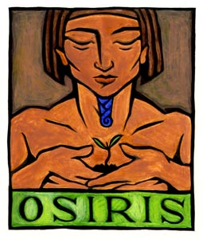
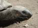

Forums galactiques > Taverne galactique : lieu de discussion informel > IZakaYa - L'alcool encore et toujours...
Pages : 1 2 ... 248 249 250 ... 308 309
| The Hitman Réputation à la taverne : 51  27/12 ETU 21:51 | Score : 0 Détails Hitman se ballada et entendu les cri dans l'izakaya. Il vit un commandant, il s'approcha de lui et dit...
Hola ! Ne vous fachez pas, je vais vous chercher du jus de datte ! Alors comme ça vous ètes ici depuis peu... | ||
| S.H.I.E.L.D Réputation à la taverne : 101  27/12 ETU 21:52 | Score : 0 Détails Nick Fury entra à l'Izakaya pour la seconde fois, ravi d'y voir peu de personnes. Seulement un certain Amenothep, avec qui il avait déja discuté à l'Assemblée il y a de cela un certain temps déja. Il s'assied au bar, à quelques sièges de son collègue, et commanda une bière brune.
| ||
| Araskel Réputation à la taverne : 396  27/12 ETU 21:57 | Score : 0 Détails "Euh, le monsieur la, on me vole mon taf' maintenant? non mais...qu'est ce que j'vous sert?"
Tout en parlant, il servit une pinte de biere brune au nouveau venu. | ||
| Amenhotep Réputation à la taverne : 93  27/12 ETU 21:59  | Score : 0 Détails Enfin, c'est pas trop tot ...
Un jus de datte, bien serré en effet ... Il est vrai que je suis présent sur l'AG depuis peu, mais dans les couloirs de cette assemblée, j'y suis depuis toujours ... Maintenant que l'Ibis est mort, je vais peut etre pouvoir prendre mon envol ... Le jus de datte arriva ... Et d'un coup d'oeil, il vit arriver le jeune homme du SHIELD ... Il tapota sur l'épaule du barman ... Tu voit le mec la bas ? Tu va lui offrir une autre biere, de ma part ! Et quel est ton nom ? A toi, et au vrai barman,lança t'il avec un sourire sur le bout des levres ... | ||
| Araskel Réputation à la taverne : 396 27/12 ETU 22:03 | Score : 0 Détails "Il parle a qui la? moi c'est Araskel,Khan des Steppes Tribales,actuel PDG de la Divine des Jeux et barman a l'Izakaya..."
Araskel se disait qu'il avait un peu trop testé la marchandise ce soir la... | ||
| S.H.I.E.L.D Réputation à la taverne : 101 27/12 ETU 22:12 | Score : 0 Détails Nick se tourna vers amenhotep.
Je dois malheureusement refuser ce verre, monsieur Amenhotep. Je suis en service 24 heures sur 24, et je ne me permets qu'une bonne bière par jour, pour me calmer les nerfs. Je peux tout de même vous offrir un second jus de date? Il fit signe à Araskel d'apporter un second verre de ce breuvage étrange. | ||
| Amenhotep Réputation à la taverne : 93 27/12 ETU 22:17 | Score : 0 Détails Merci Araskel ... Vous ne m'avez pas l'air si frais ce soir, mon ami !
Un nouveau jus de datte arriva, d'une couleur ocre ... Merci beaucoup ! Je ne travaille pas ce soir ! Mais quel est votre travail exactement ? Si c'est pas Top Secret, bien sur ! Vous devriez essayer, vous savez ? Ce n'est pas fort du tout, et c'est agréablement délicieux de sentir le jus qui traverse votre oesophage, et rejoint votre estomac ... Euh, excusez moi, je m'emporte ! On s'est pas déja vu par hasard ? Les yeux d'Amenhotep fixérent le soldat ... Les yeux verts brillérent avec intensité, comme s'il voulait percer l'ame de l'homme en face de lui ... | ||
| Araskel Réputation à la taverne : 396 27/12 ETU 22:18 | Score : 0 Détails Araskel sourit au buveur de biere en hochant la tete.
Il apporta un autre jus de datte (vraiment bizarre ce truc, remercions Solon et sa reserve d'avoir gardé CA) a l'autre client. Il parla alors d'une voix detaché: "Ah, au fait, on a de la geisha de l'ere tantrique en solde, formé par Janus-Jana! c'est des versions d'epoques, loué a prix cassé! si ca vous interresse..." | ||
| S.H.I.E.L.D Réputation à la taverne : 101 27/12 ETU 22:23 | Score : 0 Détails Mon boulot? Essayer de diriger l'une des rares agences gouvernementales assez puissante pour être représentée sous son propre nom. Pas une tâche facile. Oh, et oui, nous nous sommes déja vus. À l'Assemblée, vous m'avez traité d'arrogant prétentieux.
L'offre d'Araskel le fit rire. Je n'ai rien contre les geishas tantriques, mais elles ne risquent pas d'être un peu... usées? | ||
| Araskel Réputation à la taverne : 396 27/12 ETU 22:26 | Score : 0 Détails "Ah non non, elle sont EXPERIMENTEES! et dopée grace a une substance chimique leurs permettant de vivre plus de deux centaines d'années! elles ont l'apparence d'une jeune femme de vingt cinq ans, et la fougue aussi..."
Il marqua une pause. "Bon...je vous fait un prix, et en prime vous avez droit a une combinaison de votre choix..." | ||
| Amenhotep Réputation à la taverne : 93 27/12 ETU 22:30 | Score : 0 Détails Je me disait bien ...
Il sourit, et ses dents blanches completerent la lueur de ces yeux ... Je n'ai pas du dire cela sérieusement, puisque je ne me souvient pas de vous avoir dit cela ... Dans tout les cas, je vous prie d'accepter mes excuses ... Une organisation gouvernemental ... Vous dépendez du Conseil ? Puis, vers Araskel : Des Geishas ? Faudra que vous presente mes Danseuses du Ventre Thotienne ... Des geishas boosté ... Mouais ... Pas convaincu la ... | ||
| S.H.I.E.L.D Réputation à la taverne : 101 27/12 ETU 22:32 | Score : 0 Détails Personne n'oserait me croire si je disais de qui le S.H.I.E.L.D dépend. Mais ce n'est pas du Conseil. Et la plupart nous considère comme une société indépendante.
| ||
| Araskel Réputation à la taverne : 396 27/12 ETU 22:34 | Score : 0 Détails "PERIMEE? nan mais ca va pas la tete...bon,je sort l'artillerie lourde ASSISTANT!"
Un clone parfait d'Araskel arriva de la reserve. "Arrete de me vidé le stock de lyrrd et vas me cherché trois tigresses des steppes...c'est pour les clients la, qui disent que la marchandise est perimée, on vas leurs montré ce que c'est le peuple Tribale quand il a apprit a l'Izakaya!! non mais attends..." Le clone s'en alla vers les chambres d'un pas rapide, un trousseau de clef dans les mains. | ||
| Rudrig de Sul'Shara Réputation à la taverne : 239  27/12 ETU 22:48 | Score : 0 Détails Le pistolera arriva dans la pièce, ses lourdes bottes résonnant jusqu’à ce qu’il gagne le bar.
Salut tout le monde. Un bon whisky pour moi. | ||
| Araskel Réputation à la taverne : 396 27/12 ETU 22:57 | Score : 0 Détails "Un whisky pour l'monsieur!"
Araskel servit un verre de Chivas Regal estampillé "veritable whisky prehistorique". "Alors, ca va les affaires?" | ||
| Rudrig de Sul'Shara Réputation à la taverne : 239 27/12 ETU 23:03 | Score : 0 Détails Merci l’ami.
Les affaires vont plutôt pas mal, et j’avoue que l’odeur du combat m’avait manqué, jusqu’à notre opération made in Planitia. Et toi, comment ça va ? | ||
| Araskel Réputation à la taverne : 396 27/12 ETU 23:07 | Score : 0 Détails "Ca peut allé...quelques soucis, mais je vais bientot me renfloué...dur dur la guerre..."
| ||
| Rhal Réputation à la taverne : 0  27/12 ETU 23:13 | Score : 0 Détails SALUT LES HYPERACTIFS Y AURAIS PAS DE LA SALADE PAR ICI ?
CA FAIS DES ANN2ES LUMI7RES QUE J EN CHERCHE !!!! | ||
| S.H.I.E.L.D Réputation à la taverne : 101 27/12 ETU 23:20 | Score : 0 Détails Araskel, vous avez une invasion de tortue, il me semble.
| ||
| I-keyboard Réputation à la taverne : 8  27/12 ETU 23:38 | Score : 2 Détails Prenez garde Rhal, la carapace ne protège pas de la connerie!
|
Pages : 1 2 ... 248 249 250 ... 308 309
Forums galactiques > Taverne galactique : lieu de discussion informel > IZakaYa - L'alcool encore et toujours...